O que é Inteligência Artificial (IA)?
Inteligência Artificial, conhecida pela sigla IA, é uma área da Ciência da Computação que desenvolve sistemas e programas capazes de realizar tarefas que normalmente exigiriam inteligência humana.
Esses sistemas são criados para analisar grandes quantidades de dados, identificar padrões e aprender com as informações recebidas. Com esse aprendizado, a IA consegue executar diversas atividades, como compreender textos, reconhecer imagens, traduzir idiomas e até ajudar na tomada de decisões.
A Inteligência Artificial funciona por meio de algoritmos e modelos de aprendizado que permitem que o sistema melhore seu desempenho ao longo do tempo. Quanto mais dados ele recebe, mais preciso e eficiente tende a se tornar. Hoje, a IA está presente em muitas tecnologias utilizadas no dia a dia. Assistentes virtuais em celulares, sistemas de recomendação em plataformas de vídeo e música, ferramentas de tradução automática e até veículos autônomos utilizam algum tipo de inteligência artificial para funcionar. De forma simples, a Inteligência Artificial pode ser entendida como a tecnologia que permite que computadores aprendam com dados e realizem tarefas inteligentes, ajudando pessoas e empresas a resolver problemas de forma mais rápida e eficiente. 🤖
A nova atualização do 🪟Windows 11 em 2026
🆕 1. Teste de velocidade da internet na barra de tarefas.
Agora você pode testar a velocidade da internet diretamente pela barra de tarefas.
Basta clicar com o botão direito no ícone de rede ou Wi-Fi e escolher “teste de velocidade”
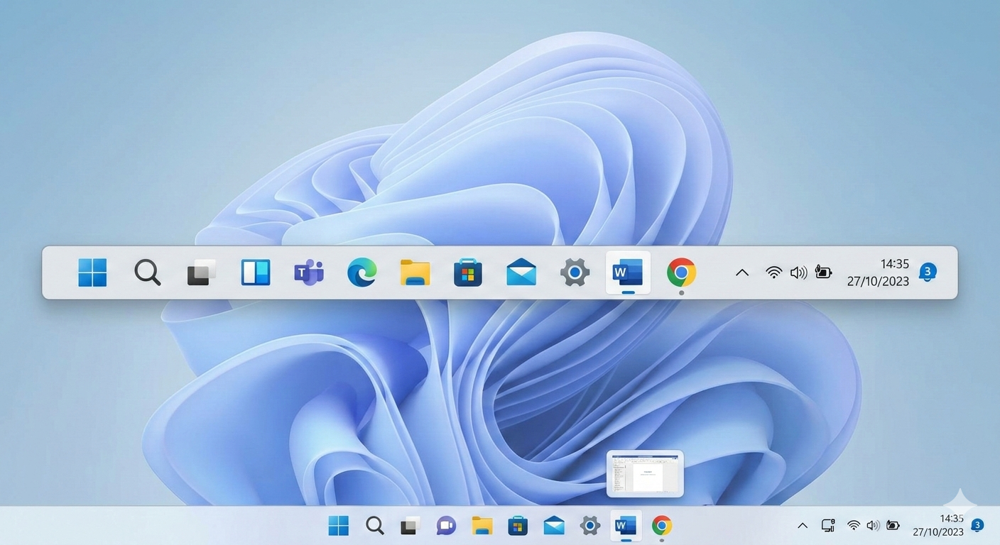
💻O que significa TPM ?:
- Trusted Platform Module.

É um chip de segurança que fica na placa-mãe do computador. 🔐
Ele protege dados importantes do computador, como:
🔑 Criptografia de arquivos
(ex.: com o software BitLocker do Microsoft Windows)
🛡️ Proteção contra vírus e hackers
🔐 Guardar senhas e chaves de segurança
💻 Verificar se o sistema foi alterado ao iniciar
Por que falam muito de TPM?
Porque o Windows 11 exige TPM 2.0 para instalar oficialmente.
Sem ele, o sistema pode não permitir a instalação.
Como saber se seu PC tem TPM?
Aperte
Windows + R
E digite
tmp.msc
Vai abrir uma janela mostrando se o TPM está ativado ou não.
✅ Resumo:
TPM é um módulo de segurança do computador que protege dados e ajuda o Windows a ser mais seguro.
Um ano que mudou a história Em 1969, o ser humano realizou um feito histórico: a chegada à Lua. A missão Apollo 11 levou Neil Armstrong e Buzz Aldrin à superfície lunar, mostrando ao mundo o poder da engenharia e da ciência da época. Os computadores usados na missão eram extremamente limitados se comparados aos de hoje, mas foram essenciais para esse grande passo da humanidade.
🌕 Exploração espacial :
Em 1969, o ser humano realizou um feito histórico: a chegada à Lua. A missão Apollo 11 levou Neil Armstrong e Buzz Aldrin à superfície lunar, mostrando ao mundo o poder da engenharia e da ciência da época. Os computadores usados na missão eram extremamente limitados se comparados aos de hoje, mas foram essenciais para esse grande passo da humanidade.
💻 Computadores:
Os computadores de 1969 eram enormes, ocupando salas inteiras. Eram utilizados principalmente por governos, universidades e grandes empresas. Os dados eram inseridos por cartões perfurados, e o conceito de computador pessoal ainda não existia.
🌐 O nascimento da internet:
Em 1969 surgiu a ARPANET, a primeira rede de computadores, que deu origem à internet. Nesse mesmo ano, foi enviada a primeira mensagem da história entre dois computadores conectados.
IBM
Bora lê , clique em ➡️Saiba mais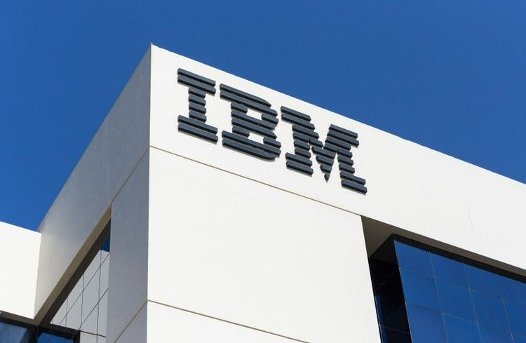
✅IBM
O que é IBM ?
(International Business Machines)
🖥️Hardware
Bora lê , clique em ➡️Saiba mais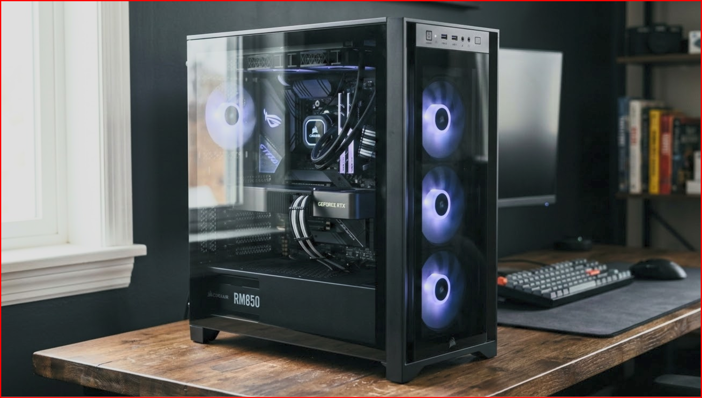
gabinete
🖋️gabinete pc.
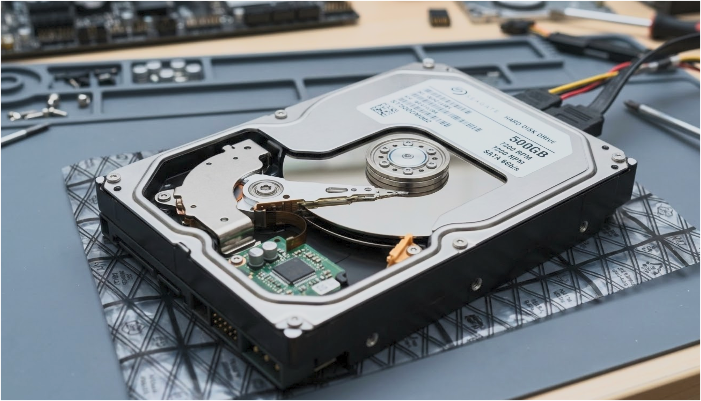
HD
Armazenamento
,
nvme
Amazenamento.
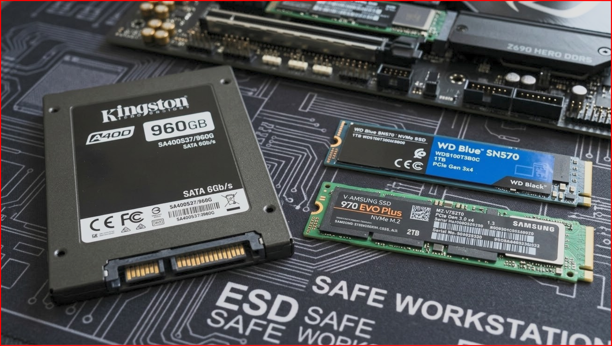
SSD
🖋️Armazenamento.
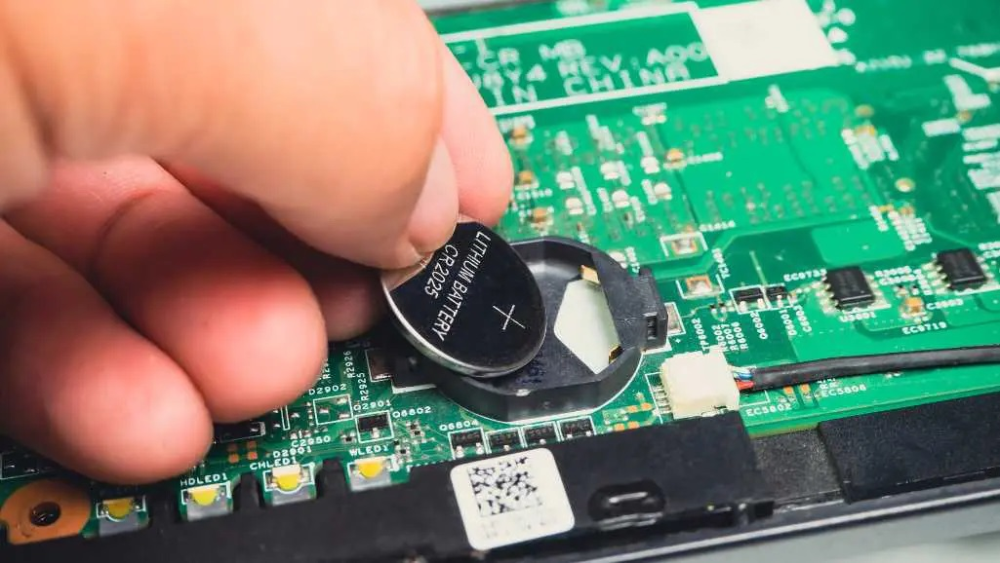
Bateria comum,uso domestico
🖋️manter as configurações.
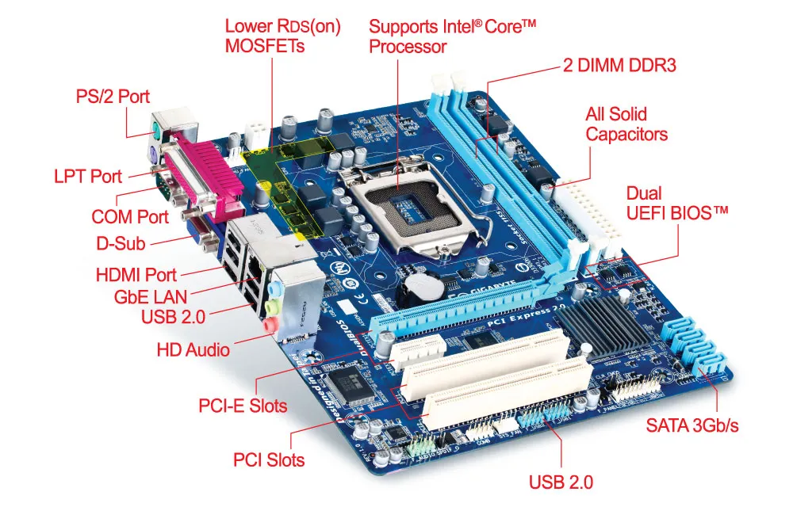
Entradas da placa-mae
🖋️Entradas .
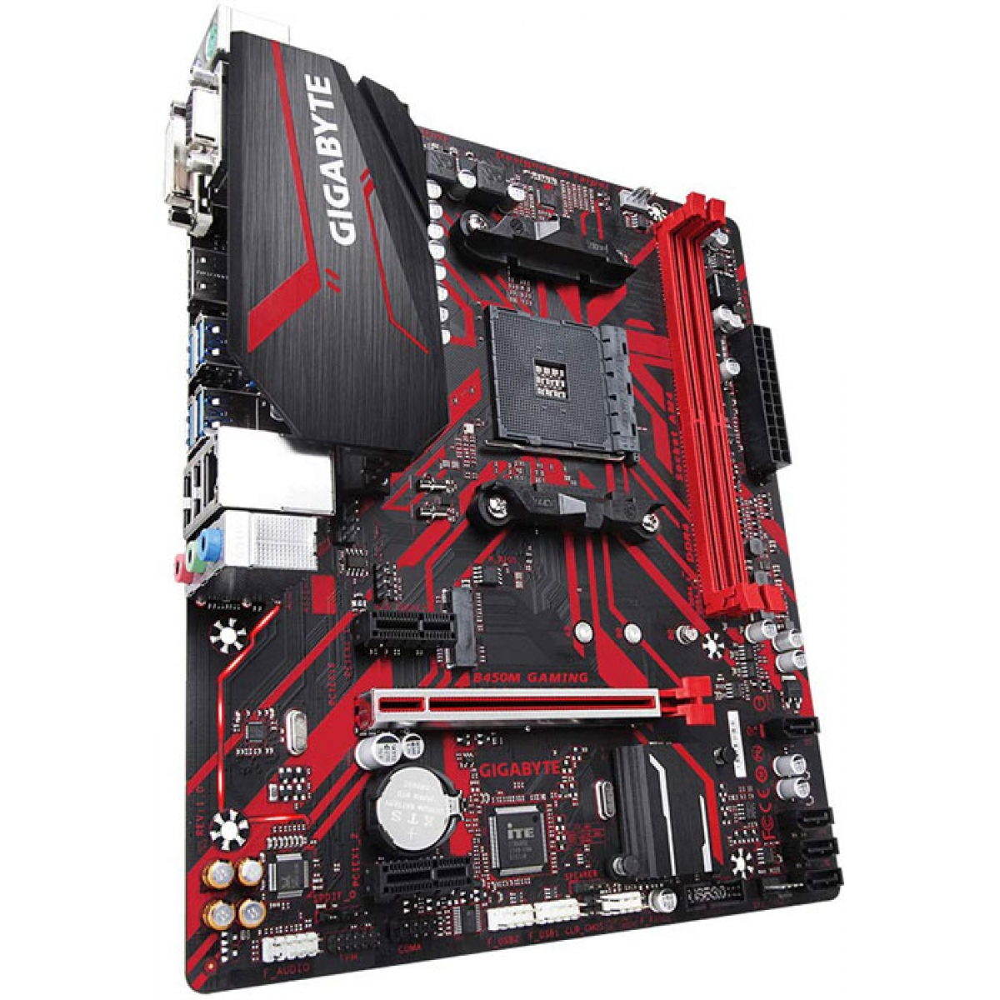
✅Placa-mãe
🖋️Principal componentes.
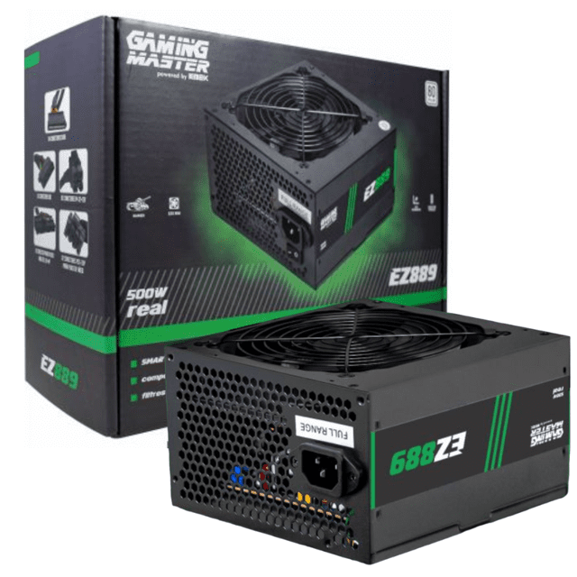
Fonte
de alimentação
,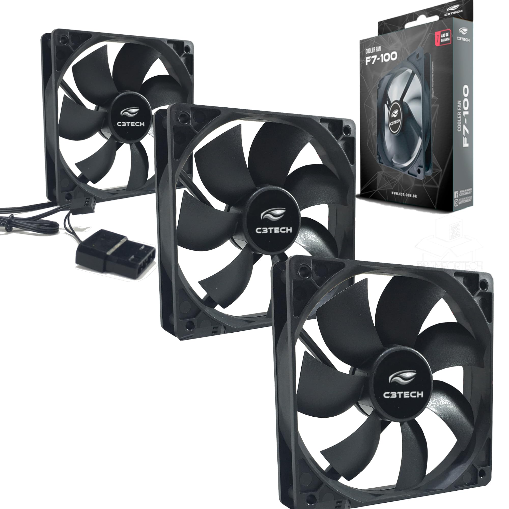
Fans/pc
🖋️são ventiladores.

cooler
🖋️resfriamento.
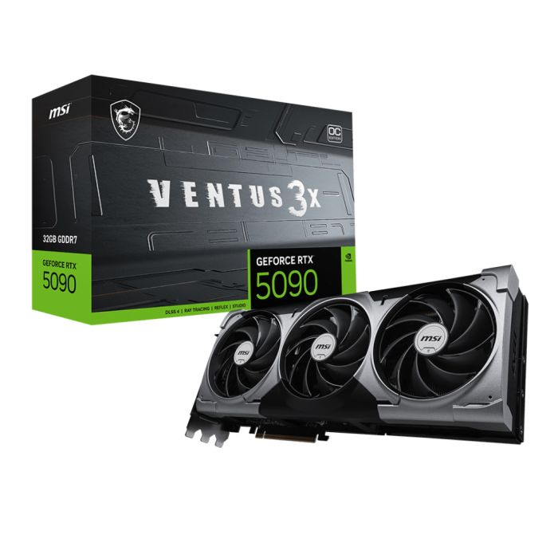
Placa de video
🖋️GPU.
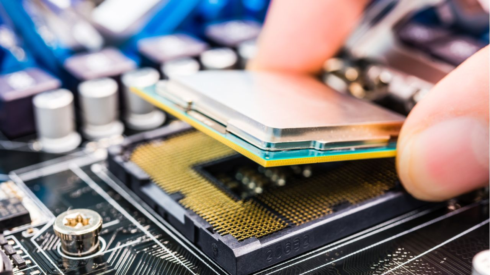
Processador
🖋️CPU.

(Conhecido como REGEDIT) {SÃO Software}
📝Uma ferramenta do Microsoft Windows

Memórias RAM
🖋️Dados temporários.

O que é Memórias ECC?
🖋️Memória ECC (do inglês Error-Correcting Code).

Como limpar windows e corrigir erros?! {SÃO Software }
🖋️ Limpar windows
📺 Comunicação e mídia:
As televisões em cores começavam a se popularizar. O uso de satélites permitia transmissões internacionais. Rádios portáteis e fitas cassete eram as principais tecnologias de áudio da época.
☎️ Telefonia :
Os telefones eram fixos, com fio e disco giratório. As centrais telefônicas ainda dependiam bastante de processos manuais.
🏭 Indústria e ciência :
A eletrônica avançava com transistores e circuitos integrados. Surgiam os primeiros robôs industriais. Na medicina, novos equipamentos ampliavam a capacidade de diagnóstico e pesquisa.
📌 Conclusão: A tecnologia de 1969 marcou o início de uma nova era. Foi o ano da chegada à Lua, do nascimento da internet e da consolidação da eletrônica moderna — bases do mundo digital em que vivemos hoje.
🖥️Software
Bora lê , clique em ➡️Saiba mais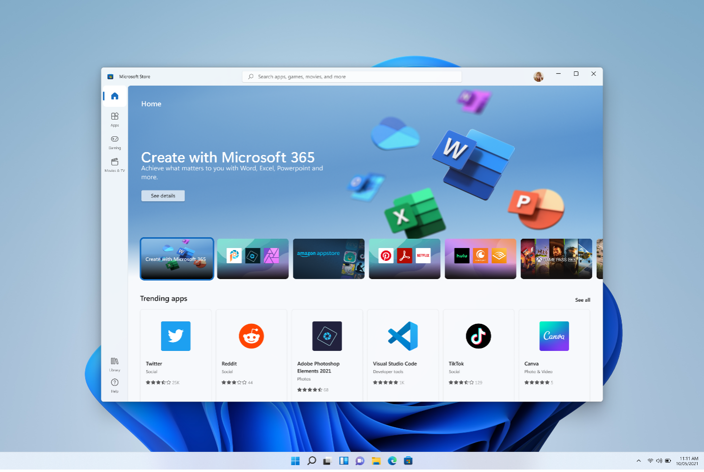
Sistema Operacional
🖋️Controla o computador.
Navegador
🖋️Acesso à internet.
🖥️Dispositivos
Bora lê , clique em ➡️Saiba mais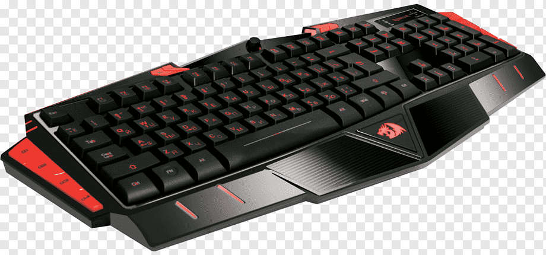
Teclado
Entrada de dados.

caixas de som
🖋️caixas de som moderna .

Mouse
Primeiro mouse 1964

Monitor
Saída de vídeo.
🚀 Tecnologia em 1969: um ano que mudou a história
O ano de 1969 foi um marco para a ciência e a tecnologia. Em plena Guerra Fria, o mundo acompanhava avanços que transformariam o futuro da humanidade, especialmente nas áreas da exploração espacial, computação e comunicação.
🌕 Exploração espacial
Em 1969, o ser humano realizou um feito histórico: a chegada à Lua. A missão Apollo 11 levou Neil Armstrong e Buzz Aldrin à superfície lunar, mostrando ao mundo o poder da engenharia e da ciência da época. Os computadores usados na missão eram extremamente limitados se comparados aos de hoje, mas foram essenciais para esse grande passo da humanidade.
💻 Computadores
Os computadores de 1969 eram enormes, ocupando salas inteiras. Eram utilizados principalmente por governos, universidades e grandes empresas. Os dados eram inseridos por cartões perfurados, e o conceito de computador pessoal ainda não existia.
🌐 O nascimento da internet
Em 1969 surgiu a ARPANET, a primeira rede de computadores, que deu origem à internet. Nesse mesmo ano, foi enviada a primeira mensagem da história entre dois computadores conectados.
📺 Comunicação e mídia
As televisões em cores começavam a se popularizar. O uso de satélites permitia transmissões internacionais. Rádios portáteis e fitas cassete eram as principais tecnologias de áudio da época.
☎️ Telefonia
Os telefones eram fixos, com fio e disco giratório. As centrais telefônicas ainda dependiam bastante de processos manuais.
🏭 Indústria e ciência
A eletrônica avançava com transistores e circuitos integrados. Surgiam os primeiros robôs industriais. Na medicina, novos equipamentos ampliavam a capacidade de diagnóstico e pesquisa.
📌 Conclusão
A tecnologia de 1969 marcou o início de uma nova era. Foi o ano da chegada à Lua, do nascimento da internet e da consolidação da eletrônica moderna — bases do mundo digital em que vivemos hoje.